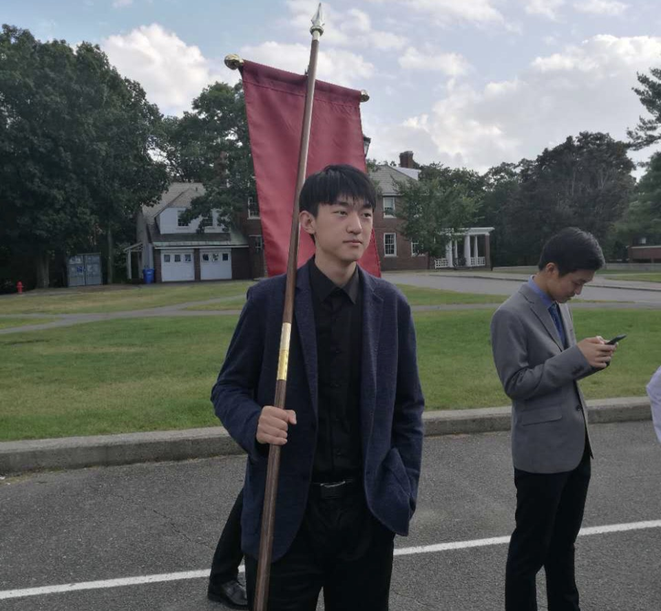
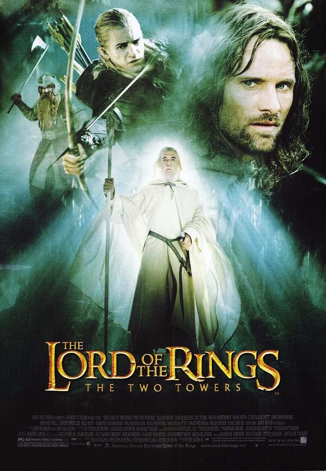

Raymond Yan
College student
I'm a rising sophomore studying finance and accounting at Boston College.
My Favorite movies

|
2008 - The Dark KnightWhen the menace known as the Joker emerges from his mysterious past, he wreaks havoc and chaos on the people of Gotham. The Dark Knight must accept one of the greatest psychological and physical tests of his ability to fight injustice. |
|  |
2002 - The Lord of the Rings: The Two TowersWhile Frodo and Sam edge closer to Mordor with the help of the shifty Gollum, the divided fellowship makes a stand against Sauron's new ally, Saruman, and his hordes of Isengard. |

|
The MartianAn astronaut becomes stranded on Mars after his team assume him dead, and must rely on his ingenuity to find a way to signal to Earth that he is alive. |